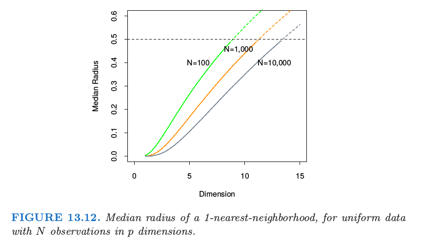
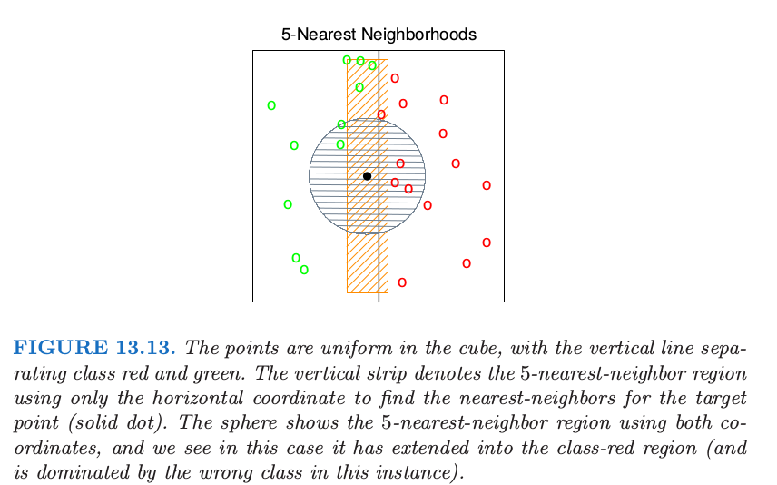
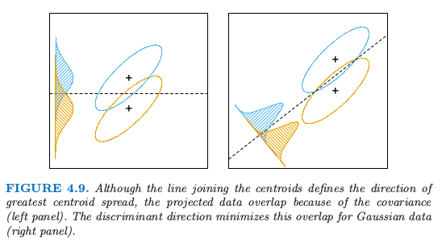
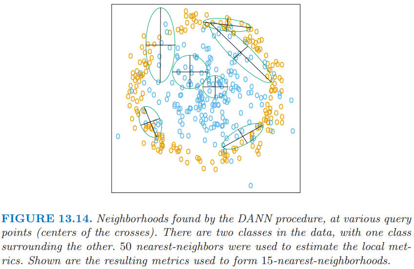
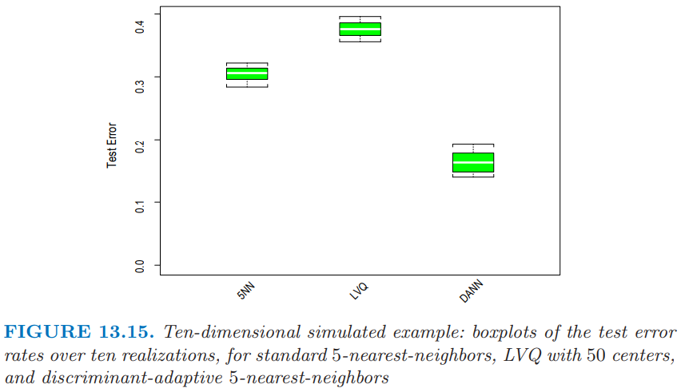

13.4 自适应最近邻方法¶
当在高维特征空间中做最近邻分类时，最近邻的点可以离得非常远，带来偏差，并且降低了分类器的效果。
为了量化这一点，考虑在单位立方体 \([-\frac{1}{2},\frac{1}{2}]^p\) 中均匀分布的 \(N\) 个数据点。令 \(R\) 为中心在原点的 1-最近邻的半径。则
其中 \(v_pr^p\) 是 \(p\) 维空间半径为 \(r\) 的球的体积。
!!! note “weiya 注：推导 式（ 13.7 ）” 记 \(X\) 为离原点的距离，根据点的均匀分布知 $\( F(X) = P(X<x)=v_px^p \)\( 考虑次序统计量 \)X_{(1)}\(，即原点与其 1 最近邻点的距离，则 \)\( F_1(x)=P(X_{(1)}<x)=1-(1-F(x))^N \)\( 而中位数满足 \)\( F_1(\mathrm{median}(R))=\frac 12 \)\( 则 \)\( \mathrm{median}=v_p^{-\frac 1p}\Big(1-{\frac 12}^{\frac 1N}\Big)^{1/p} \)$ 证毕。
图 13.12 显示了不同的训练样本大小和维度下半径的中位数。我们看到半径的中位数很快达到 0.5，也就是到立方体的边的距离。

这个问题我们可以怎么做呢？考虑图 13.13 的二分类的情形。

图中有两个特征，并且用圆形区域画出了 查询点 (query point) 的最近邻。最近邻分类的隐含假设是类别概率在邻域内近似为常值，因此简单的平均会得到不错的估计。然而，在这个例子中，只有水平方向上的类别概率会变化。如果我们提前知道这一点，可以将邻居拉伸为长方形区域。这会降低估计的偏差，同时保持方差不变。
一般地，这要求最近邻分类中采用自适应的度量，使得得到的邻域沿着类别不会改变太多的方向上拉伸。在高维特征空间中，类别概率可能仅仅只在一个低维的子空间中有所改变，因此自适应度量是很重要的优点。
Friedman (1994a)1 提出通过逐步剔除包含训练数据的盒子的边来自动寻找长方形邻域。这里我们介绍 Hastie and Tibshirani (1996a)2 提出的 判别自适应最近邻 (discriminant adaptive nearest-neighbor) (DANN)。更早的研究中，相关的方法有 Short and Fukunaga (1981)3 和 Myles and Hand (1990)4.
在每个查询点，构造其大小为 50 个点的邻域，并且用这些点的类别分布来决定怎么对邻域进行变形——也就是，对度量进行更新。接着更新后的度量用在该查询点的最近邻规则中。因此每一个查询点都可能采用不同的度量。
在图 13.13 中，很明显邻域应当沿着垂直类别重心连线的方向拉伸。这个方向也与线性判别边界重合，而且是类别概率改变最少的方向。一般地，类别概率变化最大的方向不会与类别重心连线垂直（见 4.3 节 的图 4.9）。
!!! note “Recall” 
!!! note “weiya 注：” 类别概率变化最大的方向应该是指图 4.9 右边密度曲线的横轴方向，它不与类别重心连线垂直，而左图沿着垂直方向的密度曲线会矮很多，从而变化也没有右边的大。
假设一个局部判别模型，局部 类别内 (within-) 和 类别间 (between-) 协方差矩阵的信息就足以确定邻居的最优形状。
判别自适应最近邻 (DANN) 在查询点 \(x_0\) 的度量定义为
其中
这里 \(W\) 是 合并的 (pooled) 类别内协方差矩阵 \(\sum_{k=1}^K\pi_kW_k\)，并且 \(\B\) 是类别间协方差矩阵 \(\sum_{k=1}^K\pi_k(\bar x_k-\bar x)(\bar x_k-\bar x)^T\)，其中 \(W\) 和 \(\B\) 仅用 \(x_0\) 附近的 50 个最近邻点。计算完这个度量之后，可以用来构造 \(x_0\) 处的最近邻规则。
这个复杂的公式实际上计算很简单。它首先将数据关于 \(W\) 进行球面化，接着沿着 \(\B^*\)（球面化数据的类间方差）的零特征值方向拉伸邻域。参数 \(\epsilon\) 围绕着邻域，从无穷的长条到椭球，避免使用离查询点过远的点。一般 \(\epsilon=1\) 的效果很好。

图 13.14 展示了某个问题中得到的邻域，其中类别构成了两个同心圆。注意到当邻域中同时存在两个类别的点时，邻域是怎么沿着判别边界的方向进行拉伸。在只有一个类别的区域中，邻居仍保持圆形；这种情形下类间协方差矩阵 \(\B=0\)，并且 式（ 13.8 ） 是单位矩阵。
!!! note “weiya 注：” 谢谢 @ian Chin 提醒，这里可能是作者笔误，应当是沿着 判别边界的方向 进行拉伸，而非 垂直判别边界的方向。
例子¶
这里我们在十维空间中生成两类别数据，这类似图 13.14 中二维例子。类别 1 中的 10 个变量取自独立的标准正态分布，但其半径平方需要大于 22.4 小于 40，而类别 2 中的预测变量是无约束的独立标准正态。每个类别有 250 个观测值。因此在全十维空间中，类别 1 几乎完全包围类别 2。
这个例子中没有单独的噪声变量，最近邻子集选择可能不适用。在特征空间中的每个点，类别判别值沿着一个方向。然而，当我们在特征空间中移动时方向会发生变化，并且所有变量在这个空间中某个地方都是有用的。

图 13.15 展示了标准的 5 最近邻，LVQ，以及判别自适应 5 最近邻的 10 次模拟。对于 LVQ，每个类别我们用 50 个原型，使得其与 5 最近邻相当（因为 250/ 5 = 50）。与 LVQ 或标准的最近邻相比，自适应的度量显著降低了误差率。
最近邻的全局维度降低¶
判别自适应最近邻 (DANN) 方法进行了局部维度降低——也就是，在每个查询点单独降低维度。在许多问题中，全局维度降低也是有用的，也就是，对原特征空间的最优子空间应用最近邻规则。举个例子，假设两个类别在四维特征空间中构成了两个 嵌套的球体 (nested spheres)，另外还有 6 个额外的噪声特征，其分布与类别独立。接着我们想找到最重要的四维子空间，并且在这个降维后的子空间中应用最近邻分类。Hastie and Tibshirani (1996a) 2 讨论了针对这个目标时 判别自适应最近邻 (DANN) 的变形。在每个查询点，计算类别间矩阵 \(\B_i\)，然后在所有训练点上进行平均：
令 \(e_1,e_2,\ldots,e_p\) 为 \(\bar \B\) 的特征向量，按照特征值 \(\theta_k\) 从大到小排序。则这些特征向量张成了全局子空间降维的最优子空间。推导过程基于 \(\bar \B\) 的秩为 \(L\) 的最优近似，\(\bar \B_{[L]}=\sum_{\ell=1}^L\theta_\ell e_\ell e_\ell^T\)，它是下式最小二乘问题的解
因为每个 \(\B_i\) 包含的信息有 (a) 局部判别子空间 (b) 子空间差异的强度，式（ 13.11 ） 可以看成是通过加权最小二乘寻找 \(N\) 个子空间序列的秩为 \(L\) 的最优子空间近似（练习 13.5）。
上面提到的四维球体例子，Hastie and Tibshirani (1996a)2 进行了研究，四个特征值 \(\theta_\ell\) 很大（其特征向量几乎张成了感兴趣的子空间），并且剩下的 6 个接近为 0。操作上，我们将数据投影到该四维子空间中，接着应用最近邻分类。在 13.3.2 节中的卫星图象分类例子，图 13.8 中标签为 DANN 的方法采用全局降维子空间的 5 最近邻。 Duan and Li (1991)5 的 sliced inverse regression 方法与这个方法也有些联系。他们在回归设定中采用类似的想法，但是进行全局的计算，而不是局部的。他们假设并利用特征分布的球对称性来估计感兴趣的子空间。
!!! tip “weiya 注：SIR (Sliced Inverse Regression)” SIR and Its Implementation | WeiYa’s Work Yard 记录了 Duan and Li (1991) 的主要算法，并用 R 语言重现了论文的结果。
- 1
Friedman, J. (1994a). Flexible metric nearest-neighbor classification, Technical report, Stanford University.
- 2(1,2,3)
Hastie, T. and Tibshirani, R. (1996a). Discriminant adaptive nearestneighbor classification, IEEE Pattern Recognition and Machine Intelligence 18: 607–616.
- 3
Short, R. and Fukunaga, K. (1981). The optimal distance measure for nearest neighbor classification, IEEE Transactions on Information Theory 27: 622–627.
- 4
Myles, J. and Hand, D. (1990). The multiclass metric problem in nearest neighbor classification, Pattern Recognition 23: 1291–1297.
- 5
Duan, N. and Li, K.-C. (1991). Slicing regression: a link-free regression method, Annals of Statistics 19: 505–530.